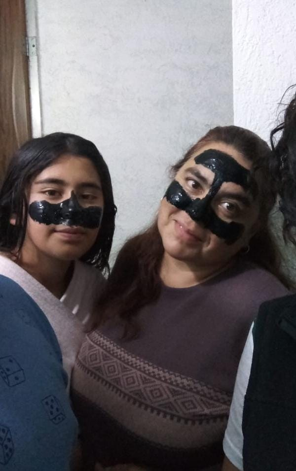
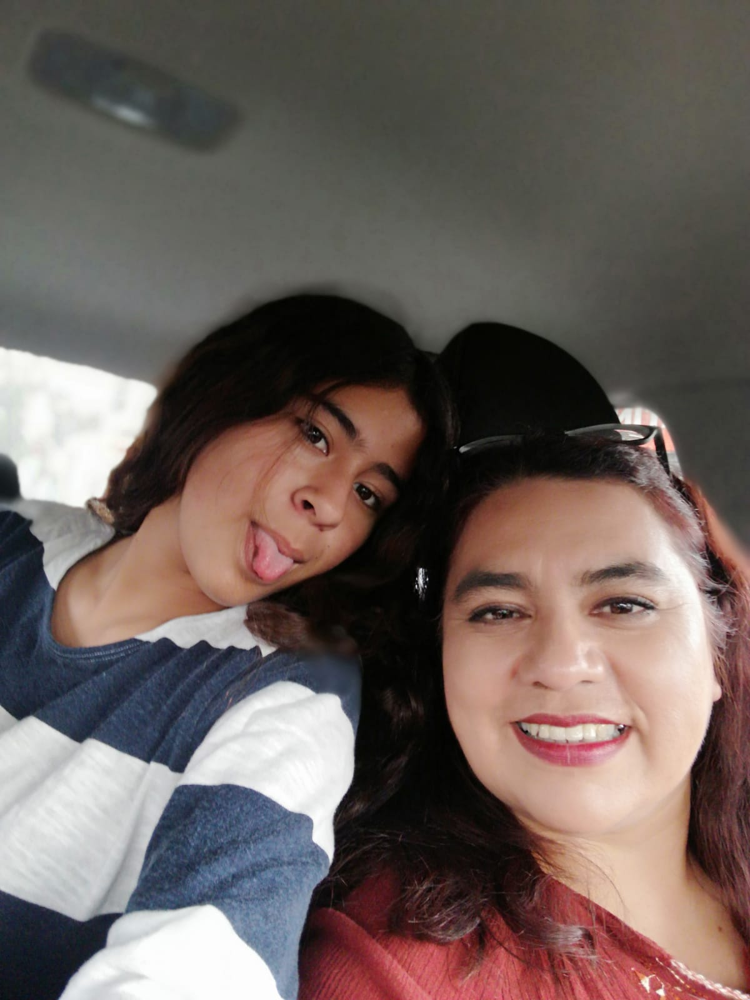
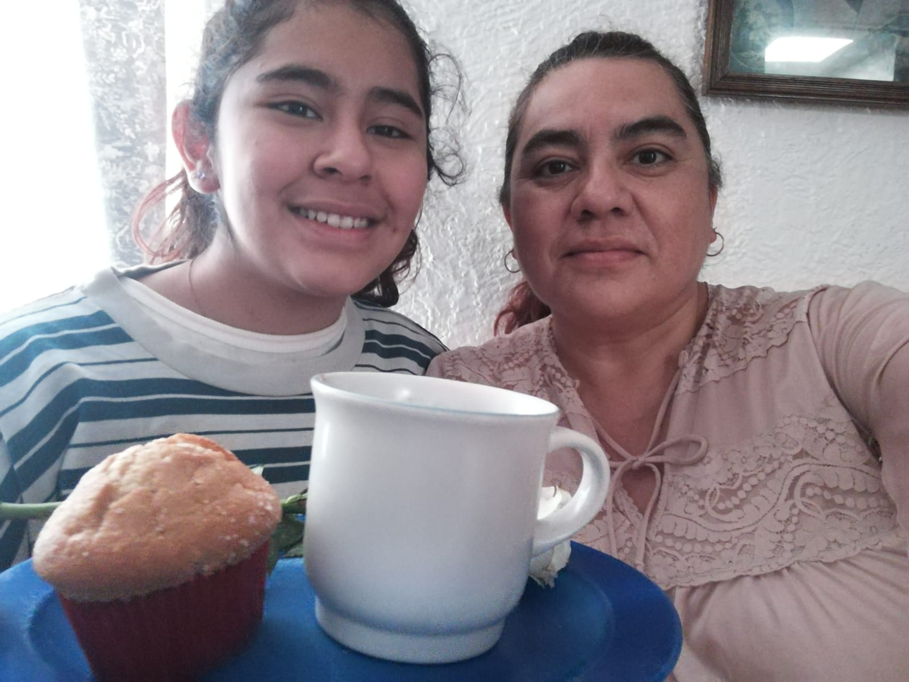

FELIZ DÍA DE LAS MADRES
Esta foto me la tome con mi mama un cuando mis hermanos y mi mamá nospusimos mascarillas juntos
Esta foto me la tome con mi mama un viernes, cuando estabamos comprando pollo
Esta foto me la tome con mi mama un dia de las madres, cuando le lleve el desayuno esto paso hace 1 año
Ma te amo porque....
- Porque nunca me dejas sola
- Porque siempre estas para mi
- Porque eres la persona en la que más confío
- Porque me has apoyado en todo momento
- Porque ne has festejado mis victorias
- Porque me has hecho la persona que soy.
- Porque me aceptas tal y como soy
MA GRACIAS POR.....
- Cuidarme en el hospital
- Hacerme ayudarme cuando mi pie estuvo y hacerme lucir
genial con la patitas de palo, del día de niños
- Ayudarme a aprenderme las tablas de multiplicar
- Por tenerme paciencia con las fracciones
- Por celebrar cuando estuve en las escolta
- Por apoyarme en el concurso de escoltas
- Por enseñarme cuando no sabía
- Por siempre estar conmigo
- Por animarme cuando más lo necesite
- Por alegrarte cuando salieron
mis resultados comipems
- Por apoyarme en todo momento
DÍAZ HERNÁNDEZ YOXANA GUADALUPE
2IM11